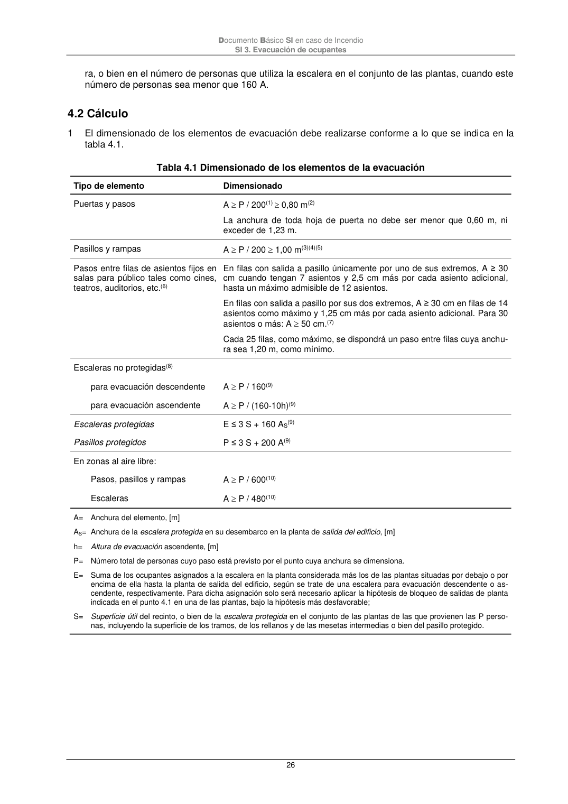

DB-SI · 4.2 Cálculo · versión 2025-03-04 · capa oficial
Formatos: JSON compacto · Markdown · PDF fuente
Ámbito del documento · texto del ámbito · documento y tablas
ID técnico a0055 · PDF pág. 26-27 · jerarquía no validada por persona · contrastado con el literal de la página 26 (marcador PDF); no validado por persona · padre: a0053
4.2 Cálculo 1 El dimensionado de los elementos de evacuación debe realizarse conforme a lo que se indica en la tabla 4.1. Tabla 4.1 Dimensionado de los elementos de la evacuación Tipo de elemento Dimensionado Puertas y pasos A P / 200(1) 0,80 m(2) La anchura de toda hoja de puerta no debe ser menor que 0,60 m, ni exceder de 1,23 m. Pasillos y rampas A P / 200 1,00 m(3)(4)(5) Pasos entre filas de asientos fijos en salas para público tales como cines, teatros, auditorios, etc.(6) En filas con salida a pasillo únicamente por uno de sus extremos, A ≥ 30 cm cuando tengan 7 asientos y 2,5 cm más por cada asiento adicional, hasta un máximo admisible de 12 asientos. En filas con salida a pasillo por sus dos extremos, A ≥ 30 cm en filas de 14 asientos como máximo y 1,25 cm más por cada asiento adicional. Para 30 asientos o más: A 50 cm.(7) Cada 25 filas, como máximo, se dispondrá un paso entre filas cuya anchu- ra sea 1,20 m, como mínimo. Escaleras no protegidas(8) para evacuación descendente A P / 160(9) para evacuación ascendente A P / (160-10h)(9) Escaleras protegidas E ≤ 3 S + 160 AS(9) Pasillos protegidos P ≤ 3 S + 200 A(9) En zonas al aire libre: Pasos, pasillos y rampas A P / 600(10) Escaleras A P / 480(10) A= Anchura del elemento, [m] AS= Anchura de la escalera protegida en su desembarco en la planta de salida del edificio, [m] h= Altura de evacuación ascendente, [m] P= Número total de personas cuyo paso está previsto por el punto cuya anchura se dimensiona. E= Suma de los ocupantes asignados a la escalera en la planta considerada más los de las plantas situadas por debajo o por encima de ella hasta la planta de salida del edificio, según se trate de una escalera para evacuación descendente o as- cendente, respectivamente. Para dicha asignación solo será necesario aplicar la hipótesis de bloqueo de salidas de planta indicada en el punto 4.1 en una de las plantas, bajo la hipótesis más desfavorable; S= Superficie útil del recinto, o bien de la escalera protegida en el conjunto de las plantas de las que provienen las P perso- nas, incluyendo la superficie de los tramos, de los rellanos y de las mesetas intermedias o bien del pasillo protegido. Documento Básico SI en caso de Incendio SI 3. Evacuación de ocupantes 27 (1) La anchura de cálculo de una puerta de salida del recinto de una escalera protegida a planta de salida del edificio debe ser al menos igual al 80% de la anchura de cálculo de la escalera. (2) En uso Hospitalario A 1,05 m, incluso en puertas de habitación. (3) En uso Hospitalario A 2,20 m ( 2,10 m en el paso a través de puertas). (4) En establecimientos de uso Comercial, la anchura mínima de los pasillos situados en áreas de venta es la siguiente: a) Si la superficie construida del área de ventas en la planta considerada excede de 400 m2: - si está previsto el uso de carros para transporte de productos: entre baterías con más de 10 cajas de cobro y estanterías: A 4,00 m. en otros pasillos: A 1,80 m. - si no está previsto el uso de carros para transporte de productos: A 1,40 m. b) Si la superficie construida del área de ventas en la planta considerada no excede de 400 m2: - si está previsto el uso de carros para transporte de productos: entre baterías con más de 10 cajas de cobro y estanterías: A 3,00 m. en otros pasillos: A 1,40 m. - si no está previsto el uso de carros para transporte de productos: A 1,20 m. (5) La anchura mínima es 0,80 m en pasillos previstos para 10 personas, como máximo, y estas sean usuarios habituales. (6) Anchura determinada por las proyecciones verticales más próximas de dos filas consecutivas, incluidas las mesas, tableros u otros elementos auxiliares que puedan existir. Los asientos abatibles que se coloquen automáticamente en posición ele- vada pueden considerarse en dicha posición. (7) No se limita el número de asientos, pero queda condicionado por la longitud de los recorridos de evacuación hasta alguna salida del recinto. (8) Incluso pasillos escalonados de acceso a localidades en anfiteatros, graderíos y tribunas de recintos cerrados, tales como cines, teatros, auditorios, pabellones polideportivos etc. (9) La anchura mínima es la que se establece en DB SUA 1-4.2.2, tabla 4.1. (10) Cuando la evacuación de estas zonas conduzca a espacios interiores, los elementos de evacuación en dichos espacios se dimensionarán como elementos interiores, excepto cuando sean escaleras o pasillos protegidos que únicamente sirvan a la evacuación de las zonas al aire libre y conduzcan directamente a salidas de edificio, o bien cuando transcurran por un espacio con una seguridad equivalente a la de un sector de riesgo mínimo (p. ej. estadios deportivos) en cuyo caso se puede mantener el dimensionamiento aplicado en las zonas al aire libre. Tabla 4.2. Capacidad de evacuación de las escaleras en función de su anchura

PDF fuente redistribuible: copia fiel enlazada en esta página (SHA256 verificado).